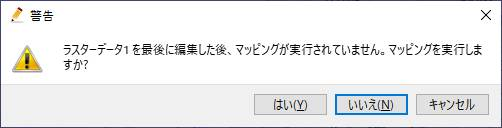
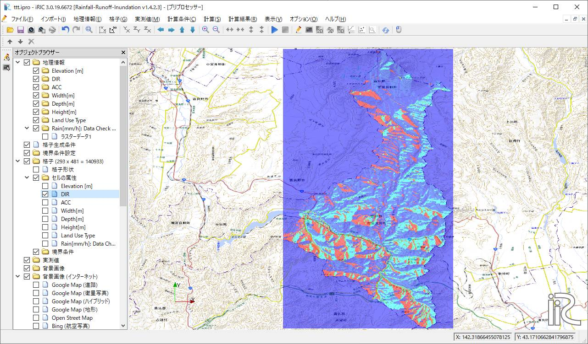
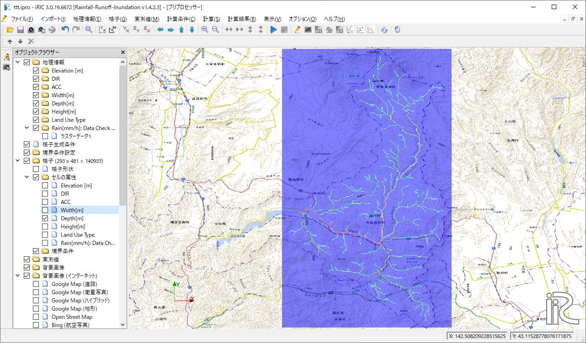
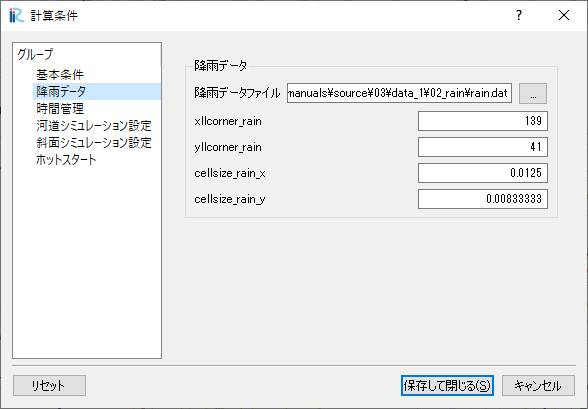

Example1：2016年8月 空知川¶
2016年8月29日から31日の大雨で空知川幾寅地区で堤防決壊による河川氾濫が生じました。大雨や氾濫の状況などについては調査報告書 1 や石田義明らの論文 2 等に詳しく記載されています。 ここでは、そのときの空知川流域（幾寅地区よりも上流）の状況をRRI on iRICでシミュレーションする手順を示します。
0. サンプルデータ¶
この事例で利用するサンプルデータは以下からダウンロードすることができます。
地形および降雨データセット → data_1
iRICソフトウェア用プロジェクトファイル → data_1_iRIC
１．流域地形データセットの取得¶
流域地形データセットは、「0.サンプルデータ」でダウンロードできるデータの中に入っていますが、以下の方法でも取得することができます。
[1] 「流域データ抽出」 にアクセスします
[2] ここでは3秒メッシュであるMERIT Hydroのデータをダウンロードします。
[3] STEP1 空知川幾寅地区を拡大し、対象流域の下流端をクリックします。

[4] STEP2 「検索」ボタンをクリックすると、対象流域が抽出されます。

[5] STEP3 「取得」ボタンをクリックし、抽出されたデータを適当な場所にダウンロードしてください。
２．降雨データセットの作成¶
降雨データセット、「0.サンプルデータ」ダウンロードできるデータの"data_1/02_rain"の中に対象地域の対象期間の解析雨量を切り出したデータを格納しています。 解析雨量については、 気象庁のホームページ をご確認ください。 ファイル名に含まれる時刻の降雨データがそれぞれASC形式のファイルに格納されています。時刻はUTCです。なおASC形式のデータはGISで可視化表示することができます。 "asc2raindat.py"は、フォルダに含まれるASC形式のデータから、RRI用の降雨データ形式のファイルを作成するPythonスクリプトです。Python実行環境がある方はそれを利用してみてください。 Python実行環境がなくても、すでにRRI用の降雨データ形式に変換したファイル"rain.dat"も一緒に格納しています。
<データ確認>
iRIC上で時系列のASC形式ファイルを以下の手順で可視化確認することができます。 ここでインポートするデータは計算には利用されません。あくまでも確認のために可視化する機能です。
iRICを起動し、RRIを選択します
「オブジェクトブラウザー＞Rain[mm/h]:Data Check Only」を右クリックし、インポートを選択します。
時系列、ASC形式で降雨データが格納されているフォルダで、一つファイルを選択、「開く」をクリックします
ファイルのデータに利用されている座標系を指定する画面が表示されるので「OK」をクリックします
ここではEPSG:4326: WGS84指定し、「OK」をクリックします。

iRICではファイル名に年月日時刻が含まれていることを前提にしています。ここではそのフォーマットを指定しています。
認識結果に適当な年月日時刻が表示されればOKです。

正しく認識されたデータの一覧が表示されます。「OK」をクリックします。
プロジェクトで利用する座標系を指定する画面が表示されるので、「OK」をクリックします。

ここではEPSG:4326: WGS84指定し、「OK」をクリックします。
インポートが開始されます。インポートが完了する以下のように降雨データを可視化することができます。時系列変化を確認することもできます。背景画像に「国土地理院（標準地図）」などを表示するとより確認しやすくなります。
３．計算条件設定¶
3.1 格子・格子属性の作成・確認¶
「計算条件＞設定」から計算条件設定画面を開きます。「グループ＞基本条件」で以下のように条件を設定します。
画面 |
条件 |
|---|---|

|
モード：「格子・格子属性生成」
データファイル設定
- DEM: 水文補正標高(elv_export.asc)
- Acc: 上流集水グリッド数(upg_export.asc)
- Dir: 表面流向データ(dir_export.asc)
河道形状をパラメータ-
- \(C_w=5, S_w=0.35\)
- \(C_d=0.95, S_d=0.2\)
- 堤防高[m]=2, 堤防セル閾値=1000
|
「保存して閉じる」をクリックし、「計算＞実行」をクリックします。 以下のような警告が表示されるかもしれませんが、問題ないので無視してください。
- 「いいえ」をクリックします。
- 
- 「はい」をクリックします。

- 計算実行前に必ずプロジェクトを保存してください。
- 保存はipro形式としてください。

- データ処理が始まると以下の画面が表示されます。

- 処理が完了すると以下の画面が表示されます。

プロジェクトを保存し、「ファイル＞開く」から再度プロジェクトを開いてください。
「オブジェクトブラウザ＞格子」の格子形状、および、セル属性で作成された値を確認することができます。
- 格子形状（293×481=140933）

- Elevation[m] 各セルの標高値です。

- ACC 各セルの上流集水ピクセル数です。セル面積を乗じると上流集水面積:Aになります。

- DIR 各セルの流向です。East(1),South-East(2),South(4),South-West(8),West(16),North-West(32),North(64),North-East(128)。
- 
- Width[m] 上流集水面積:Aと指定したパラメータによる関数 \(W = C_w A^{S_w}\) で河道幅が設定されています。

- Depth[m] 上流集水面積:Aと指定したパラメータによる関数 \(D = C_d A^{S_d}\) で河道深が設定されています。
- 
- Height[m] 上流集水ピクセル数が堤防セル閾値以上の箇所に、堤防高で指定された堤防が設定されています。

3.2 降雨条件の設定¶
降雨条件は、「2.降雨データセットの作成」で示したデータ"rain.dat"を利用します。 "rain.dat"には、2016年8月29日 0:00UTCから2016年8月31日 23:30UTC（71.5時間分）の北海道付近の降雨データが30分間隔で格納されています。 ASCファイルをテキストエディタで開くことで、データ詳細を確認することができます。
「計算条件＞設定」で計算条件設定画面を表示し、「グループ＞降雨データ」を選択し、以下のように設定します。
画面 |
条件 |
|---|---|
|  | 降雨データファイル：サンプルデータとして
ダウンロードした"rain.dat"を指定します。
xllcorner_rain:139
yllcorner_rain:41
cellsize_rain_x:0.0125
cellsize_rain_y:0.0083333
|
以上で降雨データを設定は完了です。
3.3 計算時間の設定¶
計算条件設定画面で、「グループ＞時間管理」を選択し、以下のように設定します。
画面 |
条件 |
|---|---|

|
シミュレーション時間[hour]：70
斜面計算タイムステップ[sec]：600
河道計算タイムステップ[sec]：60
出力回数：70
|
3.4 河道シミュレーション設定¶
ここでは、河道セルの判定値と河道セルと認識されたセルのマニング粗度係数を指定します。
画面 |
条件 |
|---|---|

|
河道のマニング粗度係数：0.03
河道セル判定閾値：100
|
3.5 斜面シミュレーション設定¶
斜面シミュレーションは、セル属性"Land Use Type"と関連してパラメータ設定を行います。 この事例では、"Land Use Type"を全く指定していないため、すべてのセルの"Land Use Type"は"Region1"となります。 ここでは地下浸透、地下水流れは考慮しないことにするため、以下のように設定します。
画面 |
条件 |
|---|---|

|
Region1のパラメータのみ有効
Green-Ampt ...
ksv[m/s]：0
lateral subsurface...
ka[m/s]：0
上記以外のデフォルトのまま
|
４．計算実行¶
計算条件画面で、「基本条件」の実行モードを「計算実行」にします。 「保存して閉じる」で、計算条件設定画面を閉じます。

「計算＞実行」から計算を実行してください。 計算実行前には必ず、データを保存してください。 計算が開始されると以下の画面が表示されます。

計算が終了すると、終了を知らせる画面が表示されます。
５．計算結果分析・可視化¶
計算が正常に終了すると、可視化ウィンドウの表示が可能となります。 RRI on iRICは以下の値を計算結果として出力しています。
表示名 |
意味 |
補足 |
|---|---|---|
total_qp_t[mm] |
総雨量[mm] |
1 |
qp_t[mm/h] |
雨量強度[mm/h] |
1 |
hs[m] |
氾濫原水深[m] |
1 |
hr[m] |
河道水深[m] |
1 |
qr[m] |
河道流量[m3/s] |
1 |
qu |
斜面流量x方向[m/s] |
1 |
qv |
斜面流量y方向[m/s] |
1 |
hg[m] |
地下水深[m] |
1 |
gu |
地下流量x方向[m/s] |
1 |
gv |
地下流量y方向[m/s] |
1 |
gampt_ff |
Green-Ampt cumulative water depth [m] |
1 |
iRICソフトウェアの基本機能を利用して、様々な角度から計算結果を確認することができます。 以下に可視化例を表示します。


{kind=link}
{kind=link}
{kind=link}
{kind=link}
{kind=link}
{kind=link}
{kind=link}
{kind=link}
{kind=link}
まとめ¶
ここではRRI on iRICの使い方として、地形と降雨データを準備、それらを計算条件として設定し、計算を実行し、計算結果を可視化、確認する流れを紹介しました。 得られた計算結果と実現象との比較は、ここでは行いません。各自実践してみてください。 必要に応じて、パラメータを調整し再計算するなどして、現象に対する理解を深めていただければと思います。